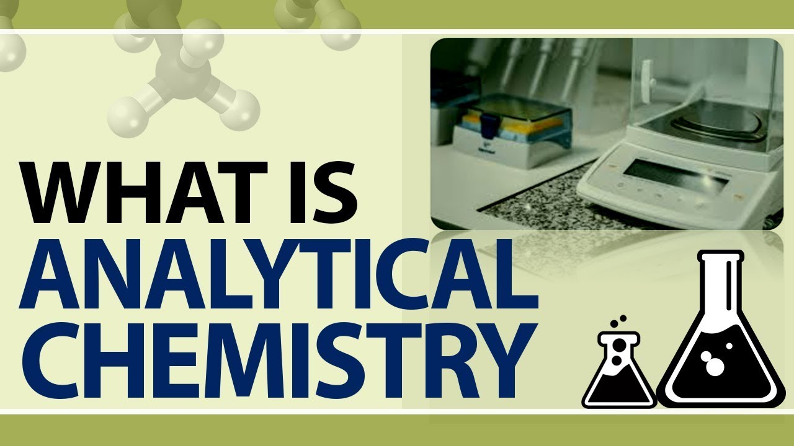

Analytical chemistry is a multifaceted branch of chemistry that plays
a fundamental rolein the field of science and industry. It
focuses on the identification, quantification, and characterization
of chemical compounds, as well as the analysis of complex mixtures.
The primary goal of analytical chemistry is to gather information
about the composition and properties of substances, providing
crucial insights in fields such as pharmaceuticals, environmental
monitoring, food safety, forensic science, and materials
science.
The key aspects of analytical chemistry:
1. Qualitative Analysis:
One of the key objectives of analytical
chemistry is to determine the identity of a particular chemical
substance within a sample. This can involve the use of various
techniques, such as spectroscopy, chromatography, and mass spectrometry,
to identify the presence of specific elements or compounds.
Qualitative analysis is vital in fields like forensics, where
it helps identify illegal drugs, toxins, or trace evidence.
2. Quantitative Analysis:
Analytical chemists also aim to
determine the quantity or concentration of a specific substance
within a sample. This involves precise measurement techniques
to quantify the amount of a particular element,molecule, or
compound present. Quantitative analysis is crucial in pharmaceuticals
toensure the correct dosage of active ingredients in medications
or in environmental monitoring to assess pollutant levels.
3. Separation Techniques:
Many samples contain a mixture of
different substances, and analytical chemistry provides various
separation methods to isolate and identify individual components.
Chromatography, for example, is a widely used technique that
separates compounds based on their affinity for a stationary
phase and their ability to travel through a mobile phase,
allowing for the separation of complex mixtures.
4. Instrumentation:
Analytical chemistry heavily relies
on advancedinstrumentation and technology to perform accurate
analyses. Instruments like spectrophotometers, mass spectrometers,
and nuclear magnetic resonance (NMR) spectrometers provide
valuable data for identifying and quantifying substances.
These instruments have evolved to offer high sensitivity, precision,
and automation, making analytical chemistry more efficient and reliable.
5. Quality Control:
Analytical chemistry is integral to quality
control in various industries. It helps ensure the consistency
and safety of products, such as pharmaceuticals, food, and
cosmetics, by verifying that they meet established
standards and specifications.
6. Environmental Analysis:
Environmental analytical chemistry
is crucial for assessing the impact of human activities on the
environment. It involves monitoring air and water quality,
analyzing soil samples, and detecting pollutants and contaminants.
This information informs environmental regulations and
policies aimed at protecting ecosystems and human health.
7. Material Characterization:
In materials science, analytical
chemistry is used to determine the composition and properties
of materials, such as metals, polymers, and ceramics. This
knowledge is essential for designing and improving materials
with specific properties for various applications.
8. Research and Development:
Analytical chemistry also plays
a vital role in research and development. Scientists use it to
study the chemical properties of new compounds, investigate
reaction mechanisms, and optimize processes in fields like
pharmaceuticals, petrochemicals, and nanotechnology.
In summary, Analytical chemistry is a diverse and essential
discipline that provides the foundation for understanding the
composition, structure, and behavior of matter. Its applications
are wide-ranging, from ensuring the safety of our food and
environment to enabling groundbreaking discoveries in scientific
research and industry. Analytical chemists continually develop new
methods and technologies to enhance the accuracy and efficiency of
their analyses, making it an ever-evolving field at the intersection
of chemistry, physics, and instrumentation.